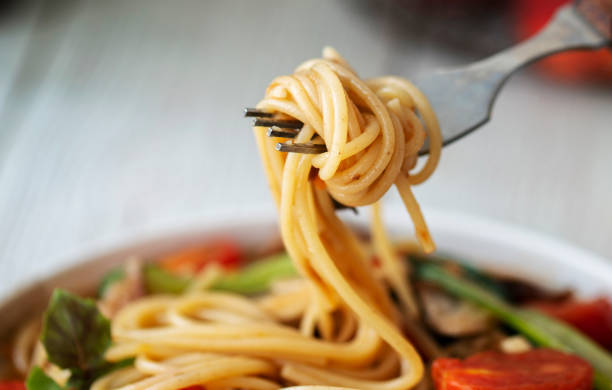

Pasta
Students eat a lot of it
Pasta World Records
Longest Strand of Pasta
The longest strand of pasta measured 3,776 m (12,388 ft 5 in) and was achieved by LAWSON INC. (Japan) at Time 24 Building, Aomi, Koto-ku, Tokyo , Japan, on 20 October 2010. The whole pasta was cooked. Sauce: This world record has been shamelessly taken from Guinness World Records on 17/10/2022
On the subject of Italy
Some do say that Italy isn't real. Sheeple say we are conspiracy theorists, but have you ever seen a real Italian??????
Don't believe what Big Italy wants you to.
Pasta Dictionary
- Al Dente: Translates as "to the tooth" and refers to the ideal tender but firm texture of cooked pasta.
- Aglio e Olio: Garlic and oil, a quick sauce often paired with spaghetti.
- Pesto: Meaning, literally, 'pounded' or 'crushed', this term which is synonymous with a basil-based pasta sauce describes the method used to make it.
- Ebollizione: Bring to a boil.
- more to be added
Pasta Information
Spaghetti, the global pasta type

Spaghetti is the quintissential pasta of choice for most households, due to its cheap pricing and versatility. Spaghetti is produced in bulk and sold in individual packets, with each packet roughly serving around 4 people. 'Spaghetto' is the singular version of 'spaghetti'. What makes spaghetti so good is the ability to slurp it down like in all of those Saturday morning cartoons, where the protagonist has a plate full of spaghetti and meatballs. It is also considered sacreligious to snap the spaghetti in twain before placing it in boiling water. Plenty of popular pasta dishes use spaghetti as its base, such as carbonara and bolognese. You can click on those to find a great recipe for either of those above dishes.
Spaghetti itself is exceptionally easy to make, with the dough being pushed through an extruder that turns it into long, thin strands. These strands are cut to the desired, and long, length required for it to be considered spaghetti. These can then be turned into dried nests once cut and coated, or can be cooked fresh, and take just a few minutes to boil. The dough itself can be customised to fit your flavour preferences, the most famous of which being squid ink spaghetti. This uses squid ink inside the dough to create a distinct, pitch black appearance, which is completely safe to eat.
Penne: Tasty Tubes in Times of Torment

During the early wave of the COVID-19 pandemic, people around the world rushed to gather supplies, pasta being an important one, as the majority of commercially available pasta is dried, and is therefore shelf stable and lasts for a long time. Most types of pasta were flying off the shelves, except for one -- penne lisce. This is a specific type of pasta, rolled into a skewed tube shape, but was completely smooth on the outside. According to MOLD, 'the original penne was smooth', meaning it didn't have those characteristic ridges on the outside. These ridges were invented at a later point, since they would 'capture' the sauce, allowing for every bite of a pasta dish to have the sauce within, so you would never get a piece of pasta with no sauce or flavour.
Penne is another common type of pasta, used commonly when spaghetti is not available. Modern cooks and chefs have used penne pasta in a new trend, known as pasta chips. Michelin star chef and TikTok famous Poppy O'Toole created these on an Instagram Live, and this contributed to a wealth of trendy social media posts as every food content creator wanted to try their hand at this curious culinary creation.
Dynamic Pasta Recipes
Click on one of the recipes for more details